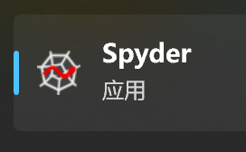
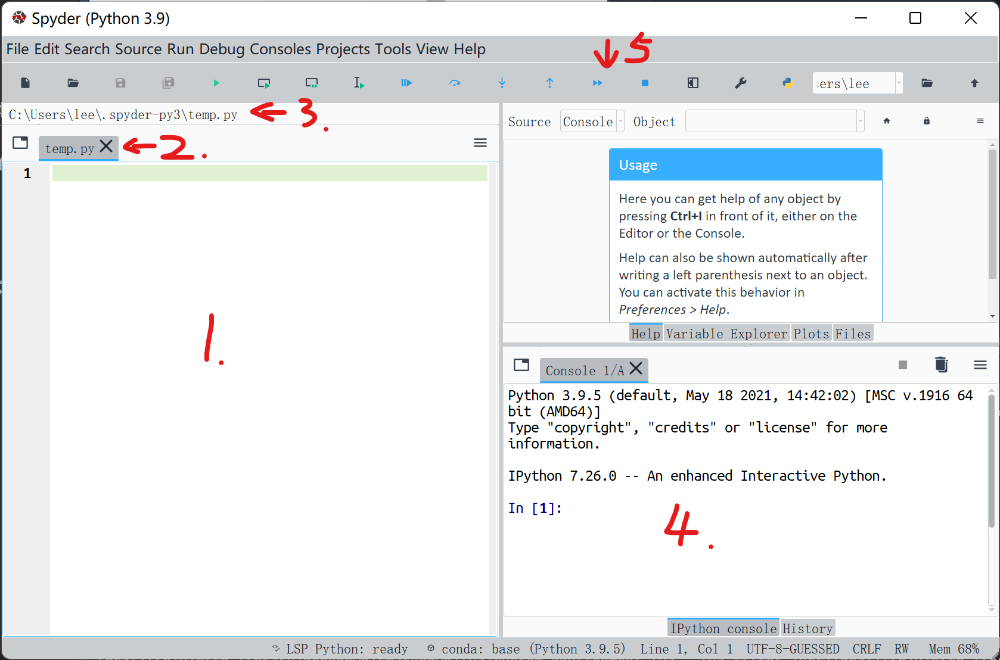
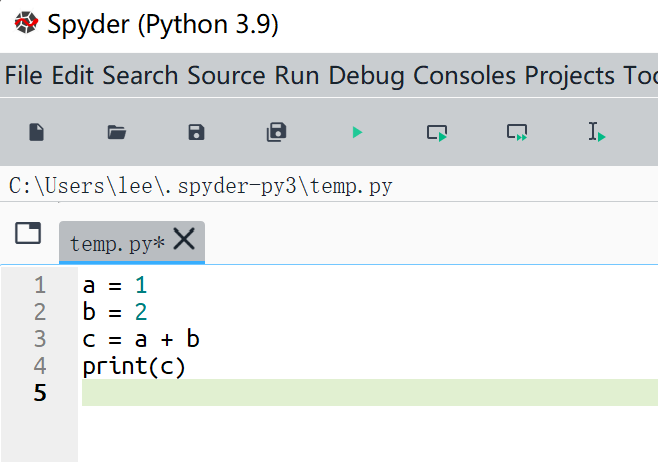
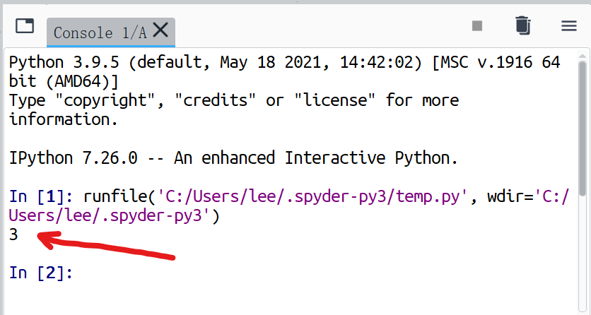
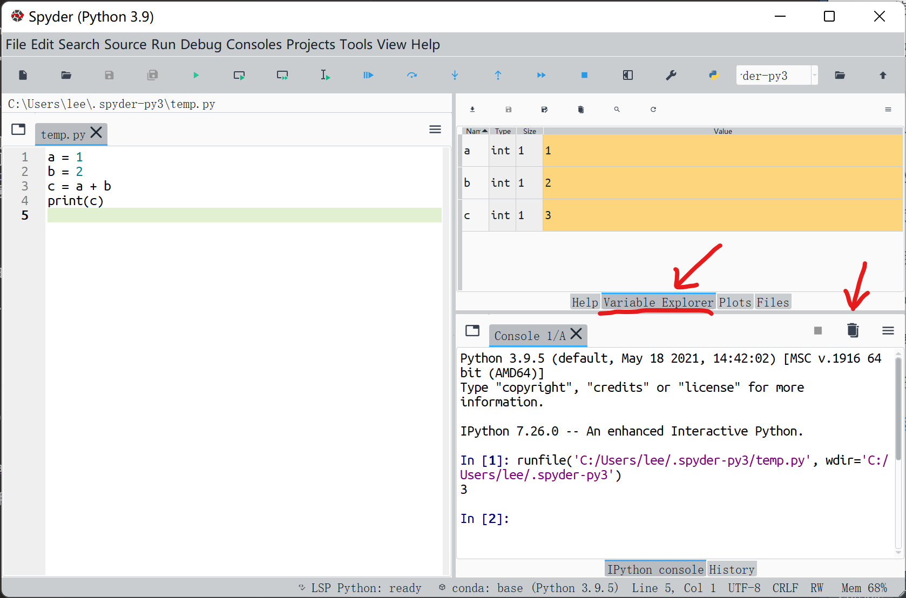
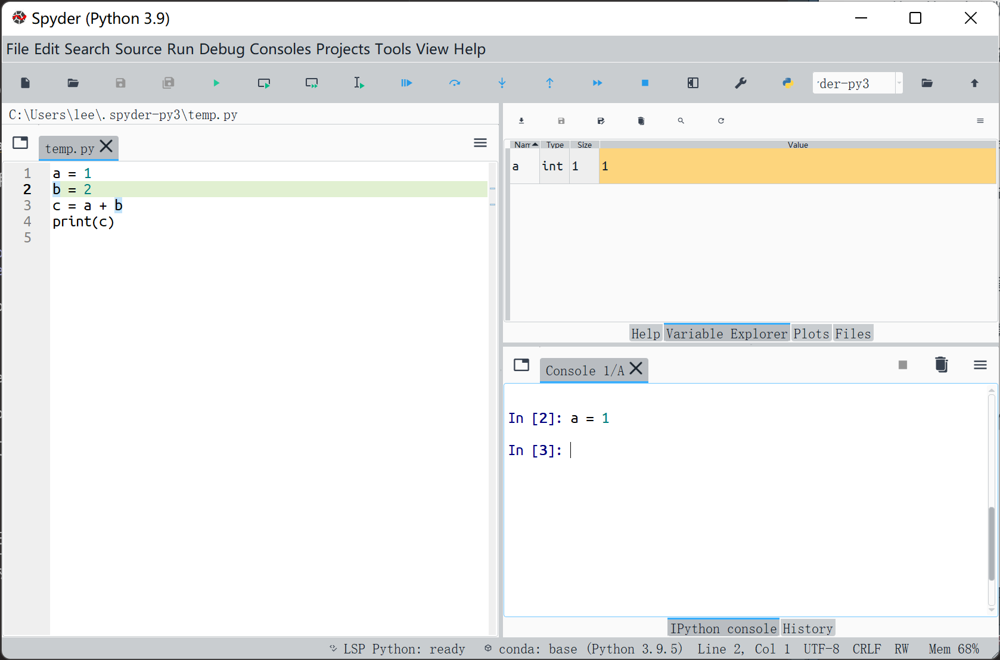
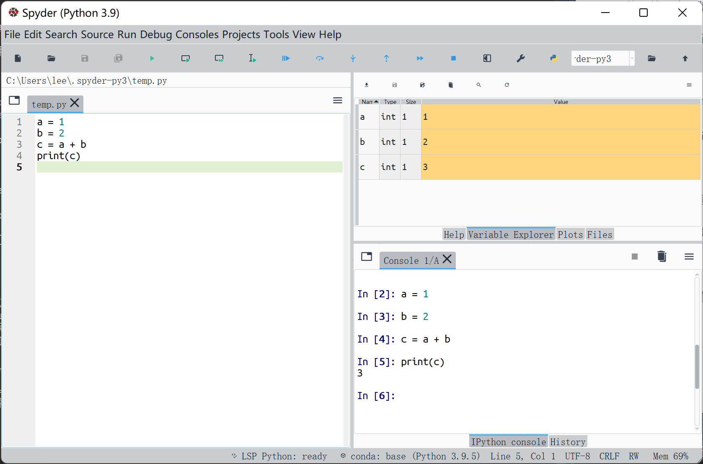
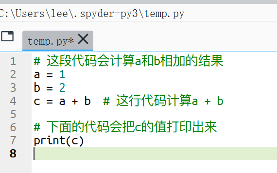
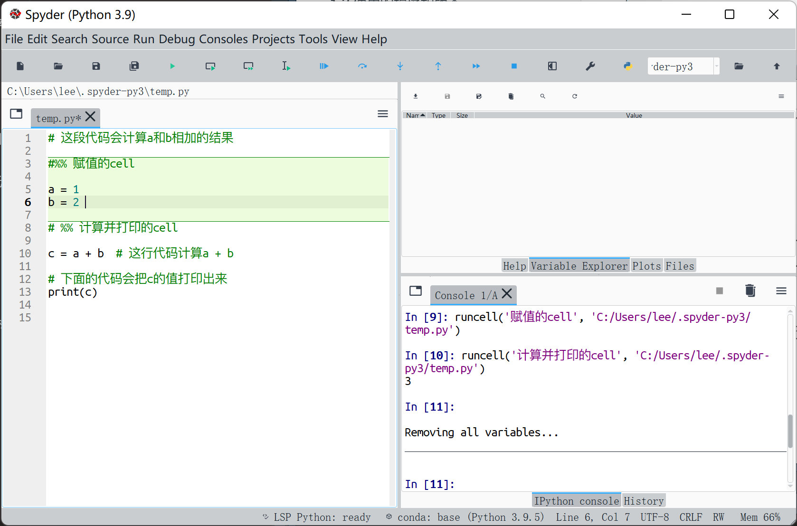
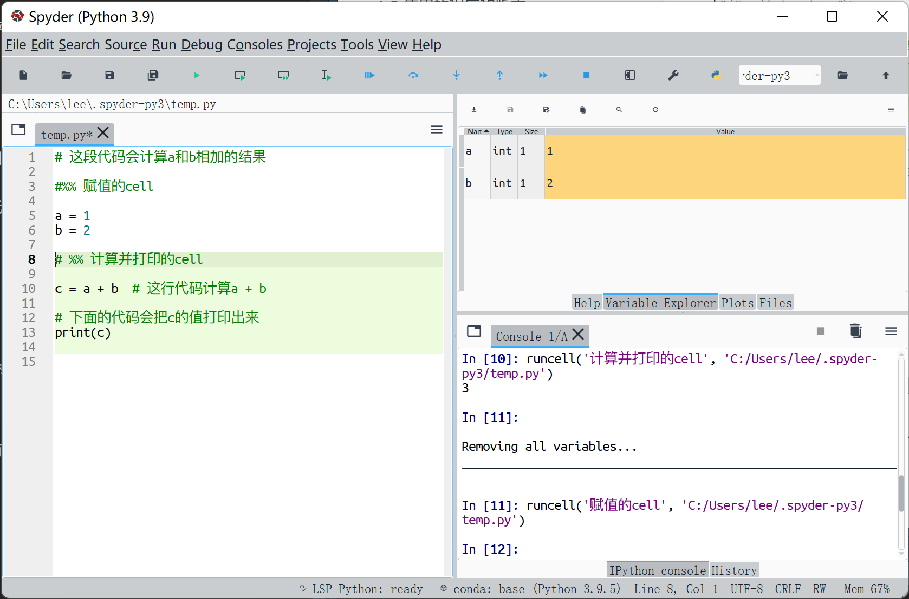

3 使用Spyder编程环境
实际上，我们真正用python做数据分析的时候，一般会利用一个集成编程环境，例如我们本课程要用的Spyder，或者流行的PyCharm，或者jupyter notebook等等。
这些集成编辑环境，通常会把.py文件的编辑和python的交互环境结合起来，让我们一边编辑py文件的同时，一边执行代码并查看结果。数据分析完毕时，代码同时也写成了。
3.1 界面
打开Spyder


Spyder默认打开了一个临时的.py文件。
- 左边是一个文本编辑器（回忆前面我们编辑
add.py文件所用的记事本）。 - 文本编辑器的标签页，显示我们当前打开的文件是
temp.py。如果文件名后带*号，表示这个文件修改了但尚未保存。 - 标签页上方，显示了当前文件
temp.py的路径。显然，这是一个绝对路径，显示了从根目录开始到这个文件的完整路径。 - 右下角是Python的交互运行环境。这个环境叫
IPython，比我们刚才运行Python交互环境要稍微先进一点，但本质上并无不同。 - 工具栏，我们后面再说。
3.2 在Spyder中写代码
我们在左侧的文本编辑器，把刚才的1+2程序写进去，按Ctrl+s保存一下（Mac: Cmd + s）。

3.3 运行程序
3.3.1 从头到尾运行代码
点击工具栏的运行按钮（Run File），或者按键盘的F5，我们可以把当前的.py脚本从头到尾运行一遍。
看交互式窗口，得到结果为3。

Run File，这个按钮的功能约等于我们在命令行环境下，直接运行“Python temp.py”。(注意我们正在编辑的文件是temp.py)
3.3.2 变量监视器
点击右上角一栏的Variable Explorer（变量浏览器），可以看到当前运行环境中的所有变量和他们的类型以及值（变量类型见后）。
点击交互界面上方的垃圾桶图标Remove all variables（移除所有变量），点击yes。

3.3.3 单步执行
现在找到“Run selection or current line”按钮。
这个按钮，顾名思义。如果你选择了一部分代码则，执行这部分代码。如果你没有选择代码，则执行光标所在行。执行完毕后，光标会自动移动到下一行。
让我们试一下。
- 点击第一行a=1，让输入光标在这一行
- 点击 ，或者F9
- 我们可以看到，这个按钮把光标所在行的代码“a = 1”，发送到了交互窗口，并执行，且光标自动下移了一行。
- 右上方的变量浏览器，现在自动出现了变量a

显然，如果我们连续点击，或者连按F9，我们就可以连续地、单步执行代码。每按一次，Spyder会把当前行的代码（或者你选定的代码），发送到交互窗口并执行。
打一个比方，这就像你同时打开记事本和python交互环境，一边在记事本中写代码，一边手动地拷贝粘贴到python交互环境中执行，是同样的逻辑。
这使得我们可以逐步查看每一行代码的效果，是实际工作中的常规操作之一。

3.3.4 选择执行
这个按钮也可以一次性执行你所选择的代码，这个大家可以自行尝试。
3.4 预备知识：Python的注释（comment）
先说注释。Python使用井号：#来表示注释。所谓注释，就是“给人看”的内容，而Python的解释器会直接忽略掉这部分。
- 注释可以出现在任何地方，注意
#号只会影响同一行右边的代码，因此也可以出现在行尾。 - 注释往往也可以用来临时屏蔽一部分代码，只要在代码的最左侧插入一个
#，那么整行代码会被Python解释器忽略。这是常用技巧。
我们尝试写几个注释，例如：

注释是对代码的说明，非常重要：
- 写代码时间长了，肯定会不记得自己写的内容。有时候上午写的，下午就会忘记。
- 多人合作的时候，要读懂彼此的代码，也必须有良好的注释。
特别地，注释是考试的给分点。你的考试程序输出了正确的结果，可以得到合格评价，同时具有良好的编写风格、合理的注释，才能得到更高分。
3.5 运行程序（续）
3.5.1 按Cell（单元格）执行
一般我们的程序，往往有一长串代码，或者连续几条语句，只是为了达到某一个特定目的。如果我们修改了某些代码，希望把整个代码块一次执行完，直接查看阶段性的结果，就可以使用cell。
可以使用特殊的注释#%%，两个#%%中间的代码，会被Spyder认为是一个cell（单元格）。光标所在的cell，会有不同颜色的背景颜色来区分。

定义好cell之后，我们可以使用工具栏中的2个按钮
- 第一个按钮是“Run current cell：执行这个cell”，快捷键是Ctrl + 回车。
- 第二个按钮是“Run current cell and go to the next one：执行这个cell，且光标移动到下一个cell”，快捷键是Shift + 回车。
按cell执行，和前述的按行执行，是我们做数据分析的时候会反复使用的按钮。
我们先新建一个“赋值的cell”，和“计算并打印的cell”，们用垃圾桶图标，先清空所有变量。
执行第一个cell，可以发现，变量a和b同时出现在变量浏览器中。这意味着这个cell内的按钮被一次性执行了。

当我们只关心一大块代码的结果，但不是太关心过程，我们就可以把这块代码划分为一个cell，随后就可以整块整块地执行。